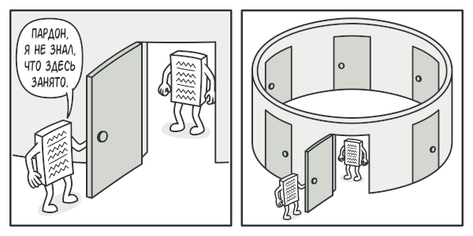

Одиночка
Суть паттерна
Одиночка — это порождающий паттерн проектирования, который гарантирует, что у класса есть только один экземпляр, и предоставляет к нему глобальную точку доступа.
Проблема
Одиночка решает сразу две проблемы, нарушая принцип единственной ответственности класса.
1. Гарантирует наличие единственного экземпляра класса. Чаще всего это полезно для доступа к какому-то
общему ресурсу, например, базе данных.
2. Предоставляет глобальную точку доступа. Это не просто
глобальная переменная, через которую можно достучаться к определённому объекту. Глобальные переменные не
защищены от записи, поэтому любой код может подменять их значения без вашего ведома.
Решение
Все реализации одиночки сводятся к тому, чтобы скрыть конструктор по умолчанию и создать публичный
статический метод, который и будет контролировать жизненный цикл объекта-одиночки.
Если у вас есть доступ
к классу одиночки, значит, будет доступ и к этому статическому методу. Из какой точки кода вы бы его ни
вызвали, он всегда будет отдавать один и тот же объект.
Аналогия из жизни
Правительство государства — хороший пример одиночки. В государстве может быть только одно официальное правительство. Вне зависимости от того, кто конкретно заседает в правительстве, оно имеет глобальную точку доступа «Правительство страны N».